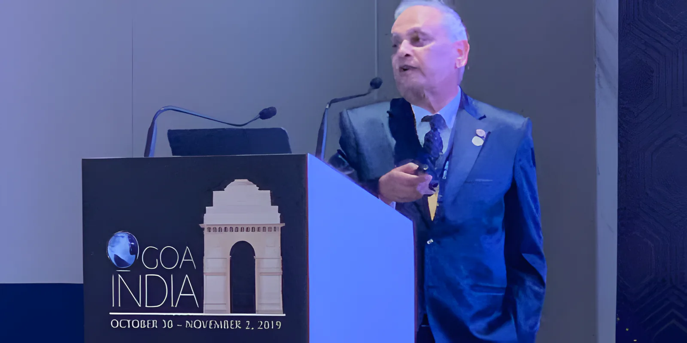

Treatments
Medical and cosmetic dermatology under one roof. Most visits start with a consultation with Dr. Mehta, who checks your skin and tells you which of the treatments below, if any, will help. Ask about prices and sessions on WhatsApp or by phone.
Pico Laser
Ultra-short pulses in four wavelengths (532, 585, 650 and 1064 nm). It is the standard for removing tattoos in several colours and for pigmentation, and it safely clears black, green and dark brown pigment from any part of the body, on all skin types.
The fractional Pico handpiece gives a gentler treatment with no downtime and much less discomfort, and it can improve melasma.
- Black, blue, grey tattoos
- Red, green, purple, orange inks
- Freckles and lentigines
- Age spots
- Melasma
- Café-au-lait spots
- Nevus of Ota, Becker's nevus
- Birthmarks
- Chicken pox and acne marks
- Dark underarms, knees, elbows
- Dark lips and inner thighs
- Non-ablative rejuvenation
Titan skin tightening
A non-surgical face and body lift. Infrared light heats the dermis so collagen contracts, while the surface is kept cool the whole time. Collagen keeps rebuilding for months afterwards. No pain, no downtime.
“I have experience of performing the Titan procedure on over 2,800 patients, on different skin types and body areas.” Dr. Mehta
- Face and neck
- Abdomen
- Thighs
- Underarms
Fractional CO2 laser
The CO2 laser (10,600 nm) with a fast fractional scanner. It places a fine grid of micro-shots into the dermis: new collagen forms and damaged tissue shrinks straight away. Recovery is short and it hurts far less than old-style resurfacing. It also tightens the skin, which non-ablative lasers can't do.
Dr. Mehta has presented his results with this laser at dermatology congresses in the USA, Europe and Dubai.

- Post-acne scars
- Surgical and injury scars
- Wrinkles
- Sun-damaged skin
- Stretch marks
- Uneven texture
RF Micro-needle
Fine gold-plated needles enter the dermis and deliver radio-frequency energy at an exact depth. Because the surface barely heats, there is little risk of dark marks afterwards, which matters for darker skin. Little downtime.
For excess sweating of the underarms, palms and soles it is one of the safest and longest-lasting options.
- Non-surgical face lifting
- Skin tightening
- Open pores
- Acne and acne scars
- Rosacea
- Keratosis pilaris
- Hidradenitis suppurativa
- Hyperhidrosis
- Wrinkles
- Stretch marks
- Uneven pigmentation
Laser hair reduction
Done under a specialist dermatologist, with a lady technician for lady patients. The clinic has several lasers for hair (CoolGlide 1064, LightSheer diode, IPL, ProWave 770 and Q-switched YAG), so the right one is used for your skin and hair, from light skin to dark and fine hair to coarse.
How many sessions you need depends on your skin, hair and the area; we'll tell you at the first visit.
- Face
- Underarms
- Arms and legs
- Back and chest
- Men and women
Vascular laser
A 1064 nm Nd:YAG laser (Cutera) with separate control of pulse, spot size and power, so it can reach deep leg veins as well as the fine spider veins on the face and legs. A cooled handpiece keeps the skin comfortable.
- Spider veins
- Leg veins
- Broken capillaries
- Cherry angioma
LimeLight photo facial
A tailored IPL treatment for the face, neck and chest. It targets redness, tiny veins, light brown spots and sun damage. You feel a mild pinch or sting with each pulse. One of three programmes is chosen for your skin type.
- Facial redness
- Tiny veins
- Brown spots
- Sun damage
Laser Genesis
A gentle laser for men and women that builds new collagen. No pain, no downtime, no numbing cream or gel, and it can be combined with other treatments.
- Large pores
- Fine lines
- Uneven texture
- Diffuse redness and rosacea
- Recent scars
Excimer laser 308 nm
A targeted light for vitiligo and psoriasis, treating the patches without exposing the rest of the skin. Dr. Mehta is a supporting member of Vitiligo Support International.
- Vitiligo
- Psoriasis
Moles and skin cancer
Skin cancer is the most common cancer, and it is preventable and curable when found early. Too much sun is the main cause. Dr. Mehta checks moles, removes them when needed, and treats melanoma, basal cell carcinoma and squamous cell carcinoma.
See us if a mole changes shape, size or colour, bleeds or itches, or a sore doesn't heal.

- Mole checks
- Mole removal
- Melanoma
- Basal cell carcinoma
- Squamous cell carcinoma
- Actinic keratosis
Cryolipolysis
Fat cells are more sensitive to cold than the skin around them. Controlled cooling breaks them down, and the body clears them naturally through the lymphatic system over the following weeks. No surgery and no downtime. The clinic also offers micro-focused ultrasound for the abdomen and double chin.
- Tummy
- Love handles
- Back
- Inner thighs
- Double chin
Medical skin conditions we treat
- Acne
- Rosacea
- Eczema
- Psoriasis
- Vitiligo
- Alopecia areata
- Hair loss
- Fungal infection
- Viral warts
- Molluscum contagiosum
- Skin tags
- Moles
- Xanthelasma
- Syringoma
- Hyperhidrosis
- Melasma
- Lentigines
- Seborrheic dermatitis
- Seborrheic keratosis
- Actinic keratosis
- Lichen planus
- Lichen simplex chronicus
- Hidradenitis suppurativa
- Sebaceous cyst
- Sebaceous hyperplasia
- Neurofibroma
- Adenoma sebaceum
- Ingrown toenail
- Corns
Cosmetic treatments
- Acne, surgical and injury scars
- Open pores
- Dark circles
- Wrinkles
- Skin fillers for lines and folds
- Lip enhancement
- Skin tightening
- Broken capillaries
- Spider veins
- Cherry angioma
- Uneven pigmentation
- Post-inflammatory pigmentation
- Tattoo removal
- Laser hair reduction
- Double chin
- Cellulite
- Hair loss, three-step treatment
- Dark lips and underarms